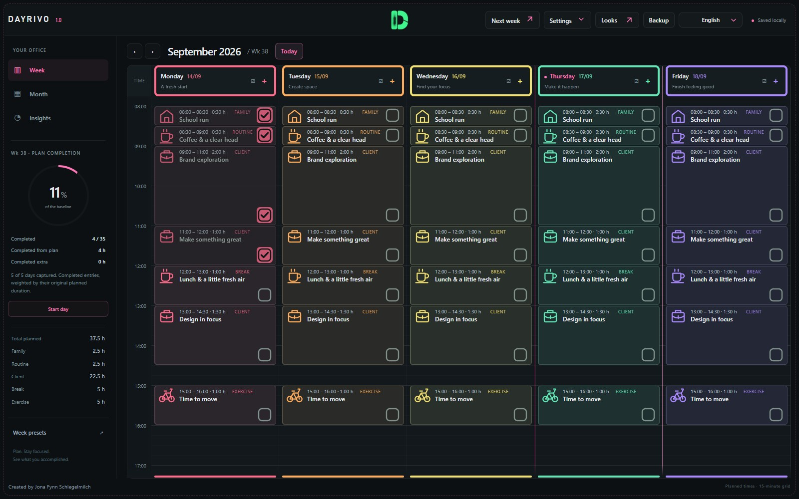

Life gets a time slot, too.
See work and personal time together, with clear categories that keep them distinct. Your priorities set the order.
You’re more than your to-do list. Make room for focused work, fresh air, and everything that makes a week yours.
No account. Your plans stay in your browser.

FOR PEOPLE WHO WEAR ALL THE HATS
Client work. The school run. That idea you can’t stop thinking about. There’s room for all of it.
See work and personal time together, with clear categories that keep them distinct. Your priorities set the order.
Move an entry to another day, stretch a time block, or start from a preset. Plans can change without starting over.
Capture your plan in the morning. Check things off as you go. See your progress against the plan you actually started with.
LESS SETTING UP. MORE SHOWING UP.
Some weeks need focus. Some need breathing room. Save the routines that work for you, and give each week its own shape.
Build a week that fitsFocus, balance, a deadline week, or time off. Choose a starting point and make it your own.
Log actual work time by hand. Keep estimates, completed tasks and earnings clearly separate.
Your colors, categories, icons and saved looks. A calm workspace with a little personality.
A FEW THINGS, UP FRONT.
Simple tools deserve straight answers.
No. The current planner runs in your browser with no account or app server. Open it and choose a template to get started.
In this browser, on this device. There is no automatic cloud sync. Use the app’s backup and restore tools to keep a separate copy. Clearing browser data can remove your plans.
Your whole week belongs here: work, family, exercise, breaks and personal projects. Categories keep them separate in your overview.
No. You enter actual work time manually. Checking off a task does not turn its planned duration into recorded work time. Clockodo integration is planned, but is not connected yet.
The layout adapts to smaller screens, with one day at a time. Desktop is the main workspace. Your phone and computer keep separate plans unless you transfer a backup.
Choose a preset. Make it yours. Take it one day at a time.